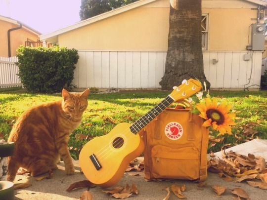
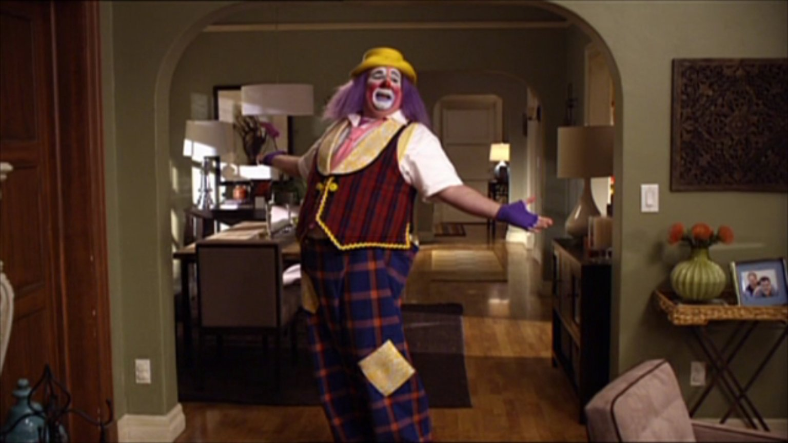

Otobiyografi
Merhaba ben Aleyna Elif ÖZKAN. 21 Temmuz 1999 tarihinde, İstanbul'da dünyaya geldim. Dedemin vefatından sonra doğduğumdan ve ilk çocuk olduğumdan, kardeşlerim doğana kadar bütün ilginin benim üzerimde olduğunu söyleyebilirim. Ben 3 yaşındayken kız kardeşim dünyaya geldi. Aileme ne kadar adını palyaço koyalım diye diretsem de malesef laf geçiremedim. Ben 6 yaşındayken ve ana okuluna yeni başlamışken erkek kardeşim dünyaya geldi. Okula başladığımda ailem sayısal zekamın daha iyi olduğuna karar verdiler. Bu yüzden fen ve matematik ağırlıklı dersler almaya başladım. Ortaokulu birincilikle bitirdim. Lise sınavına girdiğimde (o zamanki ismiyle sbs) ortalamanın üzerinde bir başarı göstererek, oturduğum semt olan Ümraniye'nin en iyi lisesine girmeye hak kazandım. 4 yılımı burada geçirdikten sonra üniversite sınavına girdim ve istediğim başarıyı elde edemedim. Bir sene daha sınava hazırlanmaya karar verip tekrar sınava girdim. Sıralamam bir önceki seneden iki kat daha iyiydi. Mühendislik okuyacağımı hiç düşünmemiş olsam da, tercih listemi mühendislikle doldurdum. Aslında ne okumak istediğimi kendim de bilmiyordum. Tercihlerim sonucunda Gebze Teknik Üniversitesi'ni kazandım. 2 yıl boyunca burada eğitim görmeye çalıştım. Ancak eğitimcilerin uyguladığı yöntemlerin bana göre olmadığını düşündüğüm için Sakarya Üniversitesi'ne yatay geçiş yaptım. Genel olarak hayatımdan kısaca böyle bahsedebilirim sanırım.
Hobilerim
Hobilerim hakkında saatlece konuşabilirim. Ama bunları öncelikle listeleyip sırayla anlatayım.
- Yemek yapmak
- Kitap okumak
- Ukulele çalmak
- Tenis oynamak
- Org çalmak
- Günlük tutmak
- Dizi izlemek
- Dijital çizim yapmak
- Müzik dinlemek
Yemek Yapmak
Farklı tarifleri denemek çok hoşuma gidiyor. Özellikle hayvansal beslenmeyle aram çok iyi olmadığından dolayı bunlara alternatif olacak tarifler denemeyi çok seviyorum. İleride tamamen sömürüsüz bir beslenme şekli olan vegan beslenmeyi düşünüyorum. Marketten hiç düşünmeden satın aldığımız şeylerin muadillerini evde çok kolay bir şekilde yapabileceğimizi düşünüyorum. Örnek olarak sadece iki malzemeyle yapılabilecek badem sütü tarifine bir göz atmanızı öneririm. Kendiniz hazırladığınız için hem içeriğinin temiz olduğuna emin olabilirsiniz, hem de kalan badem tortusunu kurutarak kolayca badem unu elde edebilirsiniz!
Kitap okumak
Ortaokul ve lise yıllarımı günlerce kitap okuyarak geçirdim. Ancak üniversite sınavına çalışmaya başladıktan sonra kitap okuma alışkanlığımı kaybettim. Karantinada bu alışkanlığımı tekrar geri kazanmaya çalışsam da hala tam başarılı olmuş değilim. Sadece okumak değil, yazmak da hobilerim arasında. Lisedeyken öykü yarışmasına katıldım. Tahlihsiz birkaç olay yüzünden yarışmanın sonucunu öğrenememiş olsam da içten içe birinci olduğuma inanıyorum :D
Ukulele çalmak
Ukuleleyi küçük bir gitar olarak tanıtabilirim aslında. Ukulelenin Hawaii dilinde anlamı zıplayan pire. 4 telli küçük bir enstrüman. Çalması ve öğrenmesi bence çok kolay. Taşınabilirlik konusunda çok rahat. Hem de oluşturduğu ses çok neşeli olduğu için insanın içini neşe dolduruyor.
Aslında ben çocukluğumdan beri enstrüman çalmak istiyordum. Ama ilk enstrümanımı bundan yaklaşık 2 sene önce arkadaşım hediye etti. Bu sayede ukulele çalmayı öğrenmeye başladım. Tamamen YouTube tutoriallarını takip ederek ortalama derecede ukulele çalabilir hale geldim. Sevdiğim şarkıların neredeyse hepsini çalabiliyorum. YouTube'da beğenerek takip ettiğim küçük bir sanatçının videosunu koymak istiyorum. Her türlü enstrüman ile her türlü müziğin yapılabileceğini kanıtlayan insanlardan biri olduğunu düşünüyorum.
Tenis oynamak
Gebze Teknik Üniversitesi'nde seçmeli ders olarak almıştım tenis dersini. Pandemiden dolayı çok fazla oynamaya fırsat bulamamış olsam da yapmayı sevdiğim nadir sporlardan biri. Hayatımın hiçbir döneminde çok aktif spor yapan bir insan olamadım. Mesleğimiz nedeniyle hareketsiz kalmayı elimizden geldiğince aza indirmeye çalışmamız gerektiğini biliyorum. Umarım arkadaşlarımızla birlikte spor yapabildiğimiz eski günlere geri dönebiliriz.
Org çalmak
Çocukluğumda yapmadığıma en fazla pişman olduğum şey org çalmak sanırım. 2021 yılında org çalmayı öğrenmeye başladım. Çocukluğumda çalmaya başlamış olsaydım şuandan kat kat daha hızlı öğrenebilirdim. Ama geç olsun güç olmasın. İnsan istedikten sonra yapamayacağı çok az şey var. Önemli olan devamlıılığı sağlayabilmek. Müzikle ilgilendiğim zamanlar bana hep çok iyi gelmiştir. Notların ve sözlerin birleştirilmesi sonucu ortaya böylesine büyüleyici bir şeyin çıkması beni hep etkilemiştir.
Almadan önce orgumu çok araştırdım. Elektronik piyanoya en fazla benzeyen orgun bu olduğunu düşünüyorum. Sadece piyano değil, gitar, bateri, keman gibi birçok enstrümanın sesini de oluşturabiliyor. İncelemek isterseniz linkini buraya bırakıyorum.
Günlük tutmak
Öfkemi üzüntümü içime atmak yerine çocukluktan beri hep yazıya dökmeyi seçtim. Ama hayatımın hiçbir döneminde bunu sürekli olarak yapmayı becerememiştim. 2021 senesinin başından beri bu alışkanlığı kendime kazandırmaya çalışıyorum. Özellikle son 1,5 yıldır akıl almaz şeyler yaşadığımız için bunları yaşarken neler hissettiğimi kaydetmek için yapıyorum bunu. İlk günlüğümü bitirmek üzereyim. Her gün 1 sayfa yazı yazmak bile insana çok iyi gelebiliyor.
Dizi izlemek
Hayatta en çok sevdiğim şey sitcom izlemek olabilir sanırım. Film izlemeyi çok sevmesem de kısa bölümlerden oluşan komedi dizilerini izlemeye bayılıyorum. En çok beğendiğim ve sürekli tekrar tekrar açıp izlediğim en sevdiğim 2 sitcom var. Hangisini daha çok sevdiğimi seçemiyorum bile.
Brooklyn 99
Bu diziyi hatırladığım kadarıyla 6 kere baştan sona kadar izledim. Bütün karakterlere bayılıyorum ama favorim Gina Linetti.

Bir polis karakolunda geçen dizi o kadar zekice yazılmış ki çoğu zaman izlerken hayran kalıyorum. En sevdiğim bölüm 5. sezon 14. bölüm 'The box'. Bölümün sonunu buradan izleyebilirsiniz.
Modern Family
Bu dizi kadar drama içeren bir sitcom daha var mı gerçekten bilmiyorum. Favori karakterim kesinlikle ama kesinlikle Cameron Tucker.

En sevdiğim bölümlerden biri Mitchel ve Cameron'ın havaalanında kaybolması.
Dijital çizim yapmak
Bu malesef üzerine çok fazla düşme fırsatım olmayan bir şey. Kendimi bu konuda çok fazla geliştirmek istiyorum. Ama projeler çok uzun sürdüğü için ve fazla emek gerektirdiği için genelde yarım bırakmaya meyilliyim. Birkaç çalışmamı paylaşabilirim.
.jpeg)
.jpeg)
Müzik dinlemek
Hayatımda olmazsa olmaz olan tek şey müzik. Çok fazla türden çok fazla şarkı dinlemeyi seviyorum. Ama en sevdiğim ve hayranlık duyduğum şarkıcı Taylor Swift. Çocukluğumdan beri hayranlık duyarak takip ediyorum. Bütün albümleri bence baştan sona çok iyi ama özellikle Folklore ve Evermore adlı albümlerini dinlemenizi tavsiye ederim. Spotify linklerini aşağıda bulabilirsiniz.